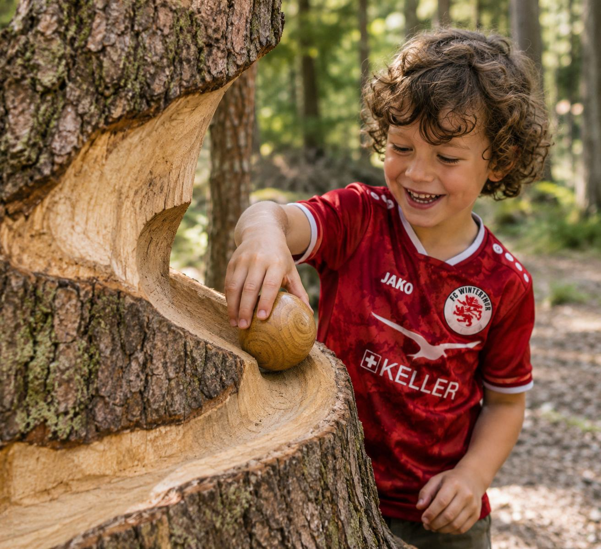
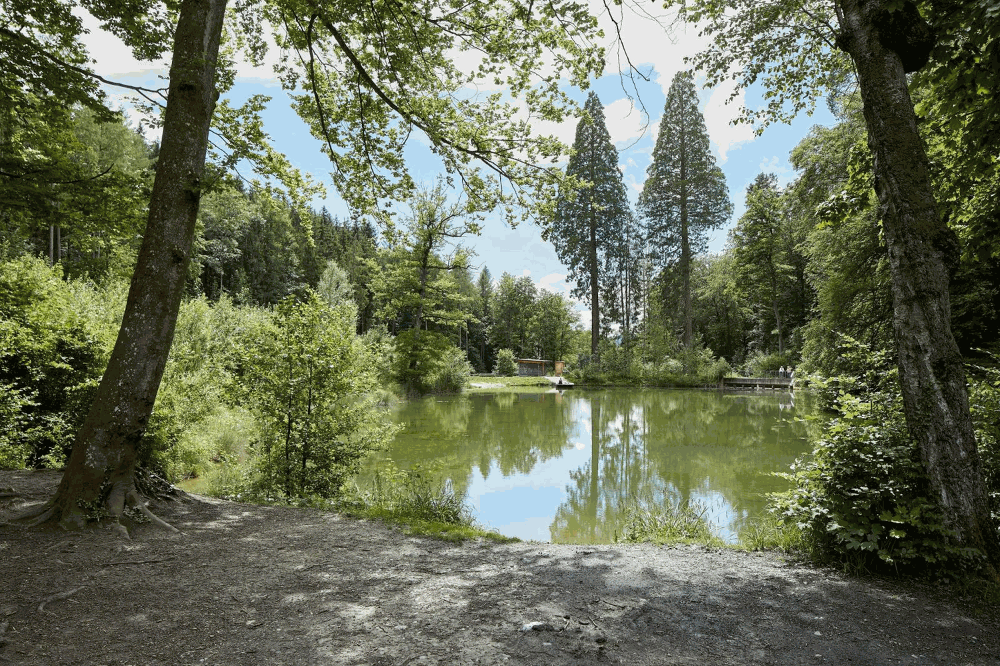
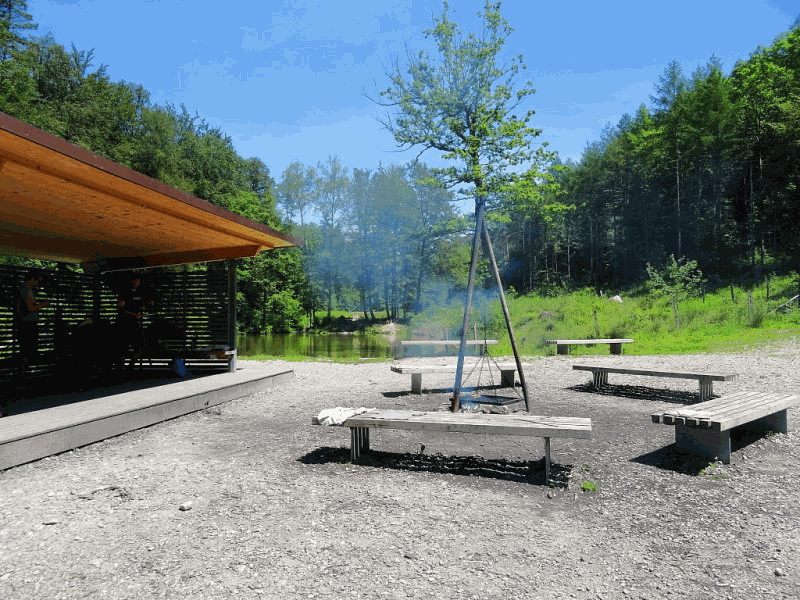
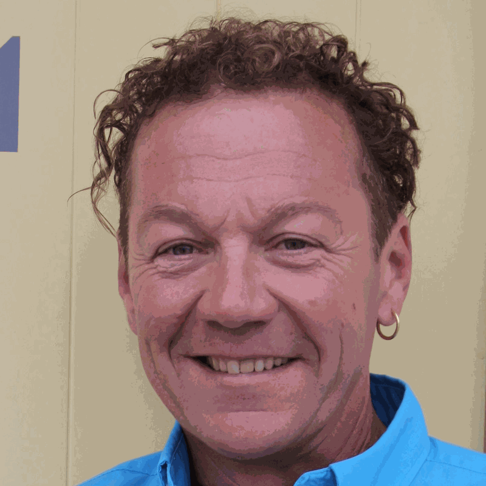
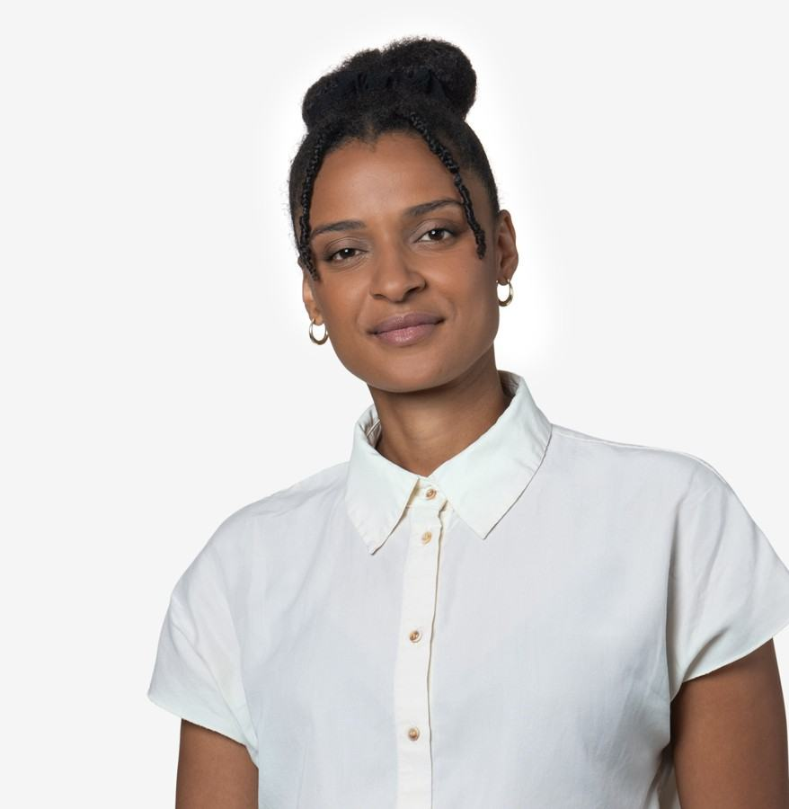
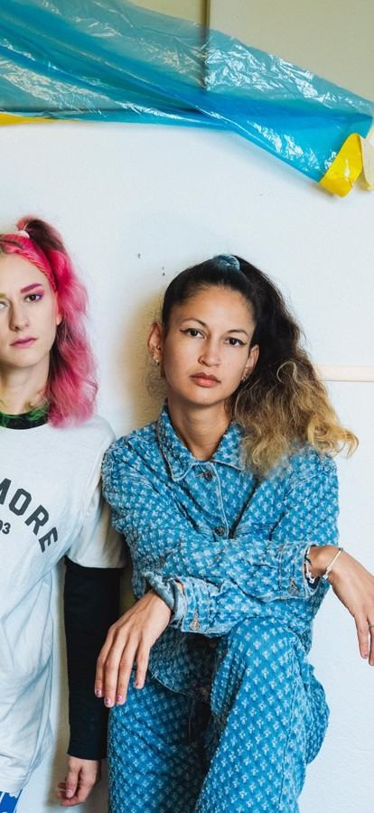

01
Naturnah
Naturbelassene Baumstämme mit geschnitzten Kugelrinnen – schlicht, ohne viel Technik oder künstliche Elemente.
Ein Wald, ein paar liegende Baumstämme und eine Holzkugel: Bei den Walcheweihern möchten wir einen einfachen Spielort schaffen, an dem Kinder entdecken, ausprobieren und miteinander spielen können.

Manchmal braucht es nicht viel: ein Stück Wald, einen Baumstamm und eine rollende Holzkugel. Wir nutzen, was schon da ist – und lassen den Wald möglichst so, wie er ist.
Naturbelassene Baumstämme mit geschnitzten Kugelrinnen – schlicht, ohne viel Technik oder künstliche Elemente.
Der Standort bei den Walcheweihern wurde gemeinsam mit dem Forstdienst der Stadt Winterthur besichtigt und die Idee vorabgestimmt. Der Forstdienst steht dem Vorhaben positiv gegenüber und hat signalisiert, die handwerkliche Umsetzung übernehmen zu können. Umfang und konkrete Ausführung werden vor Baubeginn gemeinsam festgelegt.
Aus einer Idee meiner Familie soll mit Menschen aus Winterthur etwas Schönes für Kinder entstehen. Ich kümmere mich freiwillig um die Organisation.

Die Kinder probieren aus, beobachten, wie die Kugel rollt, und spielen miteinander. Dabei bleibt der Wald das, was er ist: Natur.
Visualisierung der Idee – noch keine Aufnahme einer fertiggestellten Kügelibahn am Standort.
Wer mit Kindern durch den Wald spaziert, weiss: Oft braucht es nicht viel für grosse Abenteuer. Ein Holzstück, ein kleiner Hang, eine rollende Kugel – und schon beginnt das Spiel.
Die Idee und der Standort bei den Walcheweihern wurden mit dem Forstdienst der Stadt Winterthur vor Ort besprochen und vorabgestimmt. Der Forstdienst hat Interesse und Bereitschaft signalisiert, die handwerkliche Umsetzung zu übernehmen. Die Idee: Kugelrinnen direkt in geeignete, bereits liegende Baumstämme schnitzen – ohne aufgesetzte Plastikbahn. Der konkrete Umfang richtet sich nach den gesammelten Mitteln und wird gemeinsam geplant.
Keine grosse Anlage, sondern etwas Einfaches, das Kinder begeistert: Eine Holzkugel rollt durch den Stamm, die Kinder laufen mit, lachen und probieren es gleich nochmals. Und rundherum bleibt alles Wald.
Der Walcheweiher ist unser Standort. Hier treffen sich schon heute Familien zum Spazieren, Spielen und Grillieren. Eine kleine Kügelibahn würde wunderbar dazu passen.





Die Bilder zeigen den heutigen Ort. Welche Stämme sich für die Kugelrinnen eignen, ist noch zu klären.
Hier siehst du die Umgebung rund um den Platz, an dem die erste Kügelibahn entstehen soll. So bekommst du einen Eindruck davon, wie der Ort heute aussieht.
Originalvideo vom Walcheweiher – noch ohne Kügelibahn.
Eine Idee aus Winterthur, die mit viel freiwilligem Einsatz wachsen soll. Wir zeigen offen, wer sich wofür engagiert.

Ich lebe mit meiner Familie in Winterthur. Mein Sohn liebt Kügelibahnen und wir verbringen gerne Zeit draussen in der Natur. So entstand die Idee: Warum nicht eine Kügelibahn am Walcheweiher? Ein Ort, an dem mein Sohn und viele andere Kinder spielerisch den Wald entdecken und die Natur erleben können.
Beruflich arbeite ich beim WWF im Fundraising. Die Kügelibahn ist für mich ein echtes Herzensprojekt, für das ich mich ehrenamtlich mit viel Freude engagiere. Besonders schön finde ich, wenn aus einer persönlichen Idee gemeinsam mit anderen etwas entsteht, das vielen Menschen Freude macht.
Es handelt sich um eine private Initiative, welche mit dem Forstdienst der Stadt Winterthur vorabgestimmt ist.
Der Forstdienst hat den Standort mitbesichtigt und sich positiv zum Projekt geäussert. Die handwerkliche Umsetzung durch den Forstdienst ist grundsätzlich vorgesehen; die genaue Ausführung, der Umfang und allfällige formelle Freigaben werden vor Beginn festgelegt. Die Initiative bleibt privat und ist kein offizielles Projekt der Stadt.
Von der ersten Idee bis zur ersten Kugel, die rollt.
Wir möchten mindestens CHF 5’000 sammeln, um mit dem Forstdienst der Stadt Winterthur die ersten Kugelrinnen bei den Walcheweihern umzusetzen. Der Umfang richtet sich nach den verfügbaren Mitteln.
Falls genügend Mittel und die nötigen Absprachen vorliegen, sollen erste Rinnen geschnitzt werden.
Die ersten Spielelemente entstehen Schritt für Schritt. Ein genauer Eröffnungstermin steht noch nicht fest.
Alle Unterstützer:innen erhalten auf Wunsch Updates und eine nachvollziehbare Abrechnung.
Die erste Kügelibahn bei den Walcheweihern ist ein konkretes, mit dem Forstdienst vorabgestimmtes Spendenprojekt. Die separate Petition hat ein anderes Ziel: weitere naturnahe Spielorte in ganz Winterthur anregen.
Setz dich für mehr Kügelibahnen in Winterthur ein – von einfachen Wald-Kügelibahnen bis zu grösseren Spielanlagen.
Hilf bei der Finanzierung. Sicherer Checkout über RaiseNow und TWINT ist geplant.
Private Initiative; mit dem Forstdienst der Stadt Winterthur vor Ort besprochen und vorabgestimmt. Der Forstdienst hat Bereitschaft zur handwerklichen Umsetzung signalisiert. Umfang und weitere Voraussetzungen werden vor dem Start abgestimmt.
Wir bereiten die Spendensammlung für das erste Ziel von CHF 5’000 vor. Noch kein öffentlich bestätigter Spendenstand.
Geplanter Start Anfang 2027, abhängig von Finanzierung und letzten Absprachen.
Kinder brauchen mehr Orte zum Spielen, Entdecken und Zusammensein – draussen, naturnah und für alle zugänglich. Mit dieser Petition möchten wir der Stadt Winterthur zeigen, wie wichtig solche Spielorte sind.
Unser Ziel: 20’000 Unterschriften für mehr naturnahe Spielmöglichkeiten in Winterthur. Die erste Kügelibahn am Walcheweiher ist bereits als eigenes Vorhaben vorabgestimmt und wird unabhängig von dieser Petition durch Spenden ermöglicht.
Deine Demo-Unterschrift wurde auf diesem Gerät gezählt. Teile die Idee oder sieh dir an, wie du den Bau unterstützen kannst.
Wir wünschen uns mehr kleine, naturnahe und frei zugängliche Spielorte in Winterthur – etwa Kugelbahnen in geeigneten Baumstämmen. Mit der Petition möchten wir den Stadtrat Winterthur bitten, gemeinsam mit den zuständigen städtischen Fachstellen zusätzliche Möglichkeiten zu prüfen, geeignete Standorte zu identifizieren und solche unkomplizierten Spielangebote zu ermöglichen.
Wir möchten die Petition nach Abschluss der Unterschriftensammlung dem Stadtrat der Stadt Winterthur überreichen. Unsere konkrete Bitte: weitere naturnahe Spielorte prüfen und geeignete Projekte ermöglichen. Die erste Kugelbahn am Walcheweiher ist davon unabhängig: Sie ist eine private, mit dem Forstdienst vorabgestimmte Initiative und wird durch die separate Spendensammlung finanziert. Eine unterschriebene Petition ist keine Voraussetzung für ihre Umsetzung.
Dies ist noch keine rechtswirksame Petitionssammlung. Der Demo-Zähler wird nur auf deinem Gerät gespeichert.
Hilf mit, bei den Walcheweihern die ersten Kugelrinnen in bestehende Baumstämme zu schnitzen. Unser erstes Spendenziel: CHF 5’000.
Wähle einen Betrag. Du siehst gleich, welches Dankeschön wir dafür planen. Die sichere Bezahlung mit TWINT wird vor dem Start eingerichtet.
Der Button löst ausdrücklich keine Zahlung aus. Er erhöht nur den lokalen Demo-Zähler für diese Vorschau.
Die Testspende wurde nur in deinem Browser simuliert. Es ist kein Geld geflossen.
* Beispielziel. Es gibt noch keine offizielle Finanzierungskampagne und keine echte Zahlung.
Mit den ersten CHF 5’000 finanzieren wir den Einstieg in die handwerkliche Umsetzung am Walcheweiher. Der Forstdienst der Stadt Winterthur hat den Standort mitbesichtigt und signalisiert, die Arbeiten übernehmen zu können. Wie viele Baumstämme und Kugelrinnen konkret entstehen, legen wir mit dem Forstdienst nach dem Spendenergebnis fest. Kommt mehr Geld zusammen, prüfen wir zusätzliche geeignete Stämme oder weitere sinnvolle Elemente. Über die Verwendung informieren wir transparent.

Der Ort ist bereit für die nächsten Schritte.
Die Vorabstimmung mit dem Forstdienst ist erfolgt. Mit CHF 5’000 möchten wir die ersten Kugelrinnen umsetzen. Wie viele es werden, hängt vom verfügbaren Budget und der Detailplanung mit dem Forstdienst ab.
Jeder Betrag hilft. Bei grösseren Beiträgen möchten wir uns persönlich bedanken.
Auf Wunsch bekommst du Projekt-Updates: von der Planung bis zu den ersten rollenden Kugeln.
Wir laden dich zum geplanten Eröffnungsapéro ein, sobald Termin und Durchführung feststehen.
Zusätzlich zur Einladung schicken wir dir eine Holzkugel nach Hause. Geplant ist eine erste Serie von 50 Stück.
Dankeschöns sind aktuell geplant und noch nicht buchbar. Vor einem echten Spendenstart müssen Kugelbeschaffung, Versandkosten, Adresserfassung und Verfügbarkeit verbindlich geregelt sein.

Ab CHF 100 möchten wir uns zusätzlich mit einer eigens für das Projekt gestalteten Holzkugel bedanken. Wie sie genau aussehen wird, entscheiden wir noch.
Das Bild zeigt das Spielprinzip, nicht die versprochene Holzkugel oder den fertiggestellten Standort.
Mit CHF 5’000 möchten wir die ersten Kugelrinnen umsetzen. Der Forstdienst hat die Idee vor Ort positiv aufgenommen und Bereitschaft zur Umsetzung signalisiert. Mit zusätzlichen Mitteln könnten weitere geeignete Stämme bearbeitet werden; den Umfang planen wir nach der Sammlung.
Ein Beitrag zu den ersten Arbeitsschritten – noch keine Zusage für eine bestimmte Anzahl Rinnen.
Mit rund CHF 5’000 wollen wir die Bearbeitung erster geeigneter Baumstämme finanzieren. Das Budget ist insbesondere für die handwerkliche Umsetzung vorgesehen.
Wer spendet, soll wissen, was mit dem Geld passiert. Darum zeigen wir die Kosten und den Fortschritt so offen wie möglich.
Unser erstes Spendenziel beträgt CHF 5’000. Mit diesem Geld wollen wir gemeinsam mit dem Forstdienst der Stadt Winterthur die ersten Kugelrinnen umsetzen. Wir beginnen mit den verfügbaren Mitteln; wie viele und welche Baumstämme bearbeitet werden können, klären wir anhand des tatsächlich gesammelten Betrags. Die folgende Aufteilung ist unsere Budgetplanung. Konzept- und Kommunikationsarbeit leisten wir freiwillig.
| Position | Geplantes Budget |
|---|---|
| Handwerkliche Umsetzung: erste Rinnen in geeigneten Stämmen | CHF 4’200 |
| Werkzeug, Kleinmaterial und Holzkugeln | CHF 350 |
| Webhosting, Domain, E-Mail-/Kontaktverwaltung (Anteil) | CHF 200 |
| RaiseNow-/TWINT- und weitere Zahlungsgebühren (Budgetannahme) | CHF 150 |
| Mögliche Bankkontospesen und Überweisungsgebühren | CHF 50 |
| Kommunikation und Reserve | CHF 50 |
| Erstes Ziel | CHF 5’000 |
Zahlungsgebühren sind im Ziel von CHF 5’000 berücksichtigt (vorläufig CHF 150, entsprechend 3 %). Dazu sind CHF 50 für mögliche Bankspesen und CHF 50 Reserve eingeplant. Die tatsächlichen Gebühren hängen von der gewählten RaiseNow-/TWINT-Lösung, den Zahlungsmethoden und der Anzahl Spenden ab. Die Aufteilung richtet sich nach der tatsächlichen Umsetzung und den anfallenden Kosten.
Falls mehr Spenden eingehen als für die ersten Arbeiten benötigt, prüfen wir zusätzliche geeignete Kugelrinnen oder weitere sinnvolle Elemente. Die Verwendung wird transparent ausgewiesen und berücksichtigt die Zweckbindung der Spenden.
Es geht nicht um eine grosse Attraktion. Es geht um einen Ort, an dem Kinder aus eigenem Antrieb spielen und immer wieder Neues ausprobieren.
Wo rollt die Kugel schneller? Was passiert an der Kurve? Kinder beobachten, probieren und finden ihre eigenen Wege.
Eine Kugelbahn bringt Kinder zusammen: gemeinsam starten, warten, tauschen und einander etwas zeigen.
Die Bahn kann ein Anlass sein, wieder öfter in den Wald zu gehen – ohne Bildschirm, einfach draussen.
Das sind mögliche Spiel- und Erlebnisqualitäten, keine wissenschaftlich gemessenen Wirkungen dieses Projekts.

Wir haben die genannten Personen für eine mögliche Stimme zur Chügelibahn angefragt. Nora Ernst und Daniel Fehr haben ihre Aussagen bereits bestätigt. Bei den übrigen Personen sind die aufgeführten Formulierungen ausschliesslich redaktionelle Entwürfe: Sie stammen nicht von den Personen und sind weder als Zitat noch als Unterstützung bestätigt. Die Porträtfotos der neu angefragten Personen werden nach Klärung der Bildrechte ergänzt.
Bestätigte Stimme – Zitat persönlich freigegeben.

«Meine Kinder sind grosse Kügelibahn-Fans. Bisher kennen wir sie nur aus den Ferien - eine in Winterthur zu haben wäre grossartig.»
Aussage noch nicht bestätigt – Textentwurf, nicht von der Person geäussert.

Matteo ist in Winterthur stark verwurzelt. Als langjähriger Badmeister im Wolfensberg kennt er viele Familien aus der Stadt.
Formulierungsidee (nicht geäussert): Er kennt viele Menschen in Winterthur und weiss, wie wertvoll Treffpunkte für Familien sind.
Bestätigte Stimme – Zitat persönlich freigegeben.

«Wenn die Kugel einmal rollt, gibt es kein Halten mehr! Eine Reise beginnt – genauso fest in der Bahn wie im Kopf. Ich wünsche mir, dass Kinder am Walcheweiher ihrer Fantasie freien Lauf lassen können. Vielleicht ist die Chügelibahn ein Anstoss für sie, selbst kreativ zu werden und eigene Bahnen zu bauen.»
Aussage noch nicht bestätigt – Textentwurf, nicht von der Person geäussert.

Als bekanntes Winterthurer Gesicht steht Beni für die Verbundenheit mit der Stadt. Ein kleiner Spielort im Wald ist eine Idee, an der viele Generationen Freude haben können.
Formulierungsidee (nicht geäussert): Eine kleine Kugel kann in Winti viel Freude ins Rollen bringen.
Aussage noch nicht bestätigt – Textentwurf, nicht von der Person geäussert.

Bewegung, gemeinsames Spielen und Platz für alle Kinder: Darum geht es bei dieser Idee. Sarah Akanjis Verbindung zum Winterthurer Sport macht sie zu einer spannenden Stimme dafür.
Formulierungsidee (nicht geäussert): Draussen zusammen spielen verbindet.
Aussage noch nicht bestätigt – Textentwurf, nicht von der Person geäussert.

Draussen aktiv sein, sich bewegen und mit anderen zusammen etwas erleben – diese Werte passen zu einer naturnahen Kügelibahn und zu Samir Leuppis Verbindung zum Sport.
Formulierungsidee (nicht geäussert): Mehr Bewegung und Spiel für die nächste Generation.
Aussage noch nicht bestätigt – Textentwurf, nicht von der Person geäussert.

Kreativität entsteht oft dort, wo Menschen Freiraum haben. Auch ein einfacher Ort im Wald kann Kindern neue Ideen, Begegnungen und Freude am Entdecken schenken.
Formulierungsidee (nicht geäussert): Freiraum für Fantasie – mitten in Winterthur.
Aussage noch nicht bestätigt – Textentwurf, nicht von der Person geäussert.

Foto: © Mareycke Frehner
Ursula Bienz ist mit dem Figurentheater Winterthur verbunden: Geschichten, Spielen und Fantasie sind auch Themen der Kügelibahn.
Formulierungsidee (nicht geäussert): Ein kleiner Anstoss kann grosse Fantasie wecken.
Aussage noch nicht bestätigt – Textentwurf, nicht von der Person geäussert.

Bruno Hächler begeistert Familien mit Kinderliedern und Geschichten. Seine Perspektive auf spielerisches Entdecken wäre eine schöne Ergänzung.
Formulierungsidee (nicht geäussert): Kinder brauchen Raum für eigene Entdeckungen.
Von der Idee bis zur Website: Viel Zeit und Arbeit schenken wir diesem Projekt. Planung, Gespräche vor Ort, Texte, Kommunikation und Organisation machen wir freiwillig. Die Spenden sollen vor allem die Arbeit an der Kugelbahn und die nötigen Ausgaben decken.
Für die Finanzen suchen wir eine unabhängige Fachperson aus Winterthur, die Belege und Ausgaben prüft. Nach dem Bau möchten wir offenlegen, welche Beträge wofür eingesetzt worden sind.
Bis eine Person verbindlich zugesagt hat, nennen wir bewusst noch keinen Namen und behaupten keine bestehende Prüfzusage.
Zum Beispiel durch eine lokal verankerte Treuhandfachperson. Nach Bestätigung stellen wir hier Name, Rolle und vereinbarten Prüfungsumfang vor.
Hier dokumentieren wir den Projektfortschritt, die Verwendung der Spenden und nach der Umsetzung eine einfache Abschlussabrechnung – soweit öffentlich zugänglich und datenschutzrechtlich möglich.
Dokumente noch nicht hinterlegtJa. Die Idee und der Standort wurden mit dem Forstdienst der Stadt Winterthur vor Ort besprochen und vorabgestimmt. Der Forstdienst hat Bereitschaft signalisiert, die handwerklichen Arbeiten zu übernehmen. Die konkrete Auswahl der Stämme, der Umfang und allfällige formelle Schritte werden vor dem Baubeginn geklärt. Es ist eine private Initiative, kein offizielles Projekt der Stadt Winterthur.
Falls sich das Projekt nicht wie geplant umsetzen lässt, prüfen wir zunächst, ob eine kleinere Ausführung möglich ist. Wenn kein sinnvoller Projekteinsatz möglich ist, sollen die zweckgebundenen Spenden zurückerstattet werden. Die genauen Bedingungen werden vor dem Spendenstart verbindlich publiziert.
Geplant sind getrennte, nachvollziehbare Aufzeichnungen über alle Einnahmen und Ausgaben, Veröffentlichung der Projektabrechnung und eine externe Prüfung durch eine noch zu gewinnende unabhängige Fachperson.
Ja. Du kannst die Petition unterstützen, die Idee teilen und später eventuell mit freiwilliger Arbeit, Material oder Kontakten helfen.
Für die spätere Live-Version ist ein RaiseNow-Spendenformular mit TWINT vorgesehen. Im aktuellen Prototyp sind alle Zahlungsaktionen ausschliesslich simuliert.
Wir können aktuell keine steuerliche Abzugsfähigkeit zusichern. Eine Spendenbestätigung ist vorgesehen; ob ein Steuerabzug möglich ist, hängt von der anerkannten Trägerschaft und den jeweiligen Steuervorschriften ab.
Je mehr Menschen von der Idee erfahren, desto besser. Teile die Seite mit Freund:innen, Familien, Quartiervereinen und Menschen, die sich für Winterthur engagieren.
#ChugelibahnWinti · Beiträge aus Social Media werden erst nach Freigabe eingebunden.